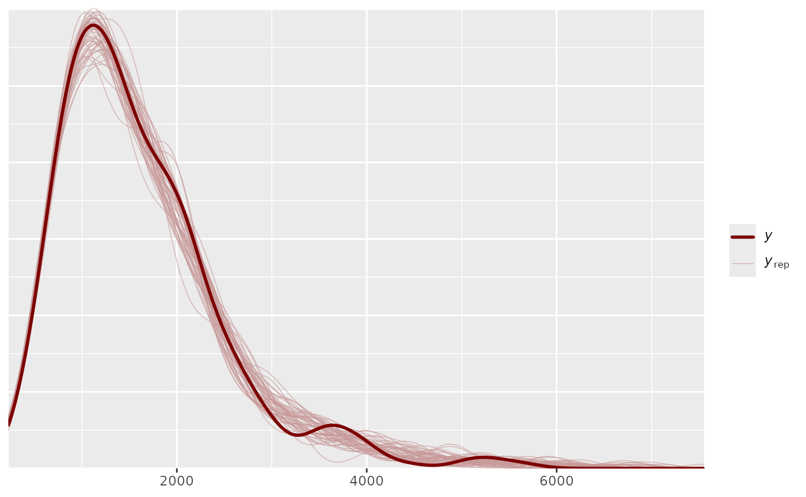

class_0 <- sample(1:2^K, N, replace = L)
Alphas_0 <- matrix(0,N,K)
for(i in 1:N){
Alphas_0[i,] <- inv_bijectionvector(K,(class_0[i]-1))
}
thetas_true = rnorm(N,0,1)
tausd_true=0.5
taus_true = rnorm(N,0,tausd_true)
G_version = 3
phi_true = 0.8
lambdas_true <- c(-2, 1.6, .4, .055) # empirical from Wang 2017
Alphas <- sim_alphas(model="HO_sep",
lambdas=lambdas_true,
thetas=thetas_true,
Q_matrix=Q_matrix,
Design_array=Design_array)
table(rowSums(Alphas[,,5]) - rowSums(Alphas[,,1])) # used to see how much transition has taken place
#>
#> 0 1 2 3 4
#> 67 39 86 127 31
itempars_true <- matrix(runif(J*2,.1,.2), ncol=2)
RT_itempars_true <- matrix(NA, nrow=J, ncol=2)
RT_itempars_true[,2] <- rnorm(J,3.45,.5)
RT_itempars_true[,1] <- runif(J,1.5,2)
Y_sim <- sim_hmcdm(model="DINA",Alphas,Q_matrix,Design_array,
itempars=itempars_true)
L_sim <- sim_RT(Alphas,Q_matrix,Design_array,RT_itempars_true,taus_true,phi_true,G_version)
output_HMDCM_RT_sep = hmcdm(Y_sim,Q_matrix,"DINA_HO_RT_sep",Design_array,
100, 30,
Latency_array = L_sim, G_version = G_version,
theta_propose = 2,deltas_propose = c(.45,.35,.25,.06))
#> 0
output_HMDCM_RT_sep
#>
#> Model: DINA_HO_RT_sep
#>
#> Sample Size: 350
#> Number of Items:
#> Number of Time Points:
#>
#> Chain Length: 100, burn-in: 50
summary(output_HMDCM_RT_sep)
#>
#> Model: DINA_HO_RT_sep
#>
#> Item Parameters:
#> ss_EAP gs_EAP
#> 0.1535 0.16739
#> 0.1568 0.18339
#> 0.2389 0.12562
#> 0.1743 0.14406
#> 0.1991 0.08131
#> ... 45 more items
#>
#> Transition Parameters:
#> lambdas_EAP
#> λ0 -2.5852
#> λ1 2.8618
#> λ2 0.1423
#> λ3 0.2588
#>
#> Class Probabilities:
#> pis_EAP
#> 0000 0.1000
#> 0001 0.1894
#> 0010 0.1587
#> 0011 0.2633
#> 0100 0.1931
#> ... 11 more classes
#>
#> Deviance Information Criterion (DIC): 156334.9
#>
#> Posterior Predictive P-value (PPP):
#> M1: 0.5292
#> M2: 0.49
#> total scores: 0.6204
a <- summary(output_HMDCM_RT_sep)
head(a$ss_EAP)
#> [,1]
#> [1,] 0.1535012
#> [2,] 0.1568235
#> [3,] 0.2388658
#> [4,] 0.1743345
#> [5,] 0.1991121
#> [6,] 0.1542346
(cor_thetas <- cor(thetas_true,a$thetas_EAP))
#> [,1]
#> [1,] 0.7813878
(cor_taus <- cor(taus_true,a$response_times_coefficients$taus_EAP))
#> [,1]
#> [1,] 0.9870075
(cor_ss <- cor(as.vector(itempars_true[,1]),a$ss_EAP))
#> [,1]
#> [1,] 0.4672609
(cor_gs <- cor(as.vector(itempars_true[,2]),a$gs_EAP))
#> [,1]
#> [1,] 0.5643451
AAR_vec <- numeric(L)
for(t in 1:L){
AAR_vec[t] <- mean(Alphas[,,t]==a$Alphas_est[,,t])
}
AAR_vec
#> [1] 0.9157143 0.9121429 0.9392857 0.9485714 0.9442857
PAR_vec <- numeric(L)
for(t in 1:L){
PAR_vec[t] <- mean(rowSums((Alphas[,,t]-a$Alphas_est[,,t])^2)==0)
}
PAR_vec
#> [1] 0.6914286 0.6857143 0.7857143 0.8200000 0.8228571
a$DIC
#> Transition Response_Time Response Joint Total
#> D_bar 1978.562 134590.0 15562.32 3161.058 155291.9
#> D(theta_bar) 1661.836 134154.0 15310.38 3122.714 154248.9
#> DIC 2295.287 135025.9 15814.27 3199.401 156334.9
head(a$PPP_total_scores)
#> [,1] [,2] [,3] [,4] [,5]
#> [1,] 0.58 0.88 0.18 0.90 0.52
#> [2,] 0.06 0.42 0.54 0.62 0.92
#> [3,] 0.72 0.58 0.92 0.80 0.80
#> [4,] 0.70 0.24 0.60 0.58 0.54
#> [5,] 0.40 0.58 0.86 1.00 1.00
#> [6,] 0.14 0.84 0.92 0.54 0.56
head(a$PPP_item_means)
#> [1] 0.52 0.50 0.48 0.46 0.50 0.46
head(a$PPP_item_ORs)
#> [,1] [,2] [,3] [,4] [,5] [,6] [,7] [,8] [,9] [,10] [,11] [,12] [,13] [,14]
#> [1,] NA 0.54 0.24 0.46 0.54 0.26 0.56 0.44 0.66 0.28 0.74 0.96 0.74 0.46
#> [2,] NA NA 0.38 0.94 0.22 0.72 0.74 0.44 0.92 0.76 0.14 0.92 0.98 0.32
#> [3,] NA NA NA 0.66 0.98 0.44 0.74 0.92 0.68 0.84 0.62 0.48 0.66 0.80
#> [4,] NA NA NA NA 0.96 0.68 0.90 0.94 0.54 0.80 0.76 0.88 0.94 0.90
#> [5,] NA NA NA NA NA 0.62 0.88 0.90 0.88 0.58 0.10 0.64 0.94 0.28
#> [6,] NA NA NA NA NA NA 0.82 0.14 0.52 0.86 0.12 1.00 0.34 0.62
#> [,15] [,16] [,17] [,18] [,19] [,20] [,21] [,22] [,23] [,24] [,25] [,26]
#> [1,] 0.86 0.92 0.88 0.94 0.68 0.90 0.96 0.64 0.44 0.28 0.38 0.72
#> [2,] 0.44 0.34 0.54 0.66 0.90 0.40 0.86 0.86 0.66 0.66 0.58 0.82
#> [3,] 0.38 0.02 0.24 0.66 0.24 0.10 0.62 0.40 0.86 0.80 0.90 0.12
#> [4,] 0.52 0.80 0.16 0.98 0.78 0.38 0.60 0.48 0.74 0.76 0.64 0.16
#> [5,] 0.76 0.42 0.10 0.52 0.22 0.42 0.78 1.00 0.62 0.84 0.64 0.36
#> [6,] 0.46 0.70 0.42 0.08 0.14 0.26 0.56 0.32 0.30 0.66 0.56 0.70
#> [,27] [,28] [,29] [,30] [,31] [,32] [,33] [,34] [,35] [,36] [,37] [,38]
#> [1,] 0.80 0.30 0.54 0.66 0.32 0.74 0.48 0.76 0.04 0.94 0.36 0.62
#> [2,] 0.58 0.96 0.62 0.56 0.78 0.42 0.42 0.78 0.90 0.66 0.68 0.26
#> [3,] 0.72 0.66 0.90 0.46 0.24 0.38 0.12 0.90 0.12 0.56 0.26 0.60
#> [4,] 0.54 0.96 0.46 0.68 0.20 0.98 0.44 0.18 0.04 0.16 0.04 0.24
#> [5,] 0.52 0.46 0.58 0.86 0.56 0.10 0.66 1.00 0.22 0.78 0.48 0.62
#> [6,] 0.44 0.72 0.04 0.58 0.56 0.98 0.70 0.70 0.86 0.90 0.78 0.88
#> [,39] [,40] [,41] [,42] [,43] [,44] [,45] [,46] [,47] [,48] [,49] [,50]
#> [1,] 0.64 0.96 0.36 0.78 0.26 0.42 0.12 0.00 0.40 0.58 0.92 0.76
#> [2,] 0.84 0.50 0.46 0.42 0.76 0.34 0.28 0.20 0.08 0.68 0.86 0.20
#> [3,] 0.12 0.88 0.36 0.34 0.18 0.24 0.72 0.84 0.18 0.14 0.52 0.38
#> [4,] 0.18 0.62 0.56 0.64 0.48 0.82 0.16 0.46 0.34 0.98 0.80 0.18
#> [5,] 0.96 0.88 0.90 0.26 0.52 0.30 0.90 0.18 0.72 0.54 0.78 0.60
#> [6,] 0.40 0.36 0.66 0.90 0.94 0.80 0.58 0.64 0.80 0.96 0.96 0.74
library(bayesplot)
#> This is bayesplot version 1.10.0
#> - Online documentation and vignettes at mc-stan.org/bayesplot
#> - bayesplot theme set to bayesplot::theme_default()
#> * Does _not_ affect other ggplot2 plots
#> * See ?bayesplot_theme_set for details on theme setting
pp_check(output_HMDCM_RT_sep, type="total_latency")